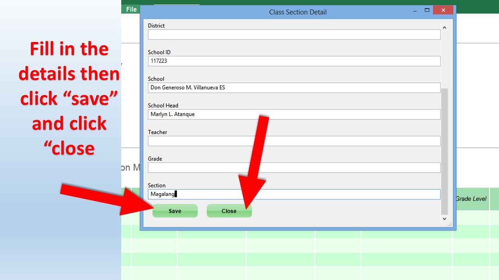
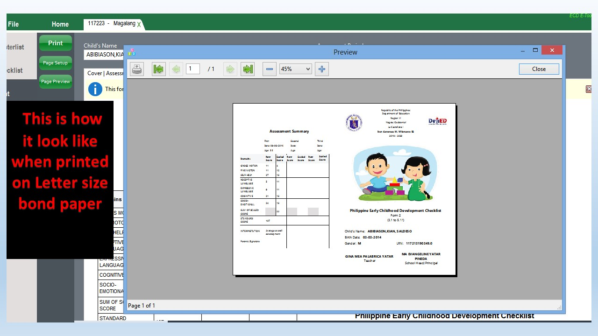

Single Post
ECD ETool Version 4 Tutorial
Early Childhood Development Checklist E-Tool 4 Basic Tutorial
May 9, 2020This Tutorial will guide you the basic things you can do when using the ECD E-Tool Version 4.
TABLE OF CONTENTS
I. PRELIMINARY
- System Requirements
- Installation
II. How to use
- Creating ECD Checklist File
- Creating a Class
- Adding records by "Enroll Learner" or by "Import SF1 feature
- Updating Data Due to LIS data correction in the middle or end of school year.
- Updating assessment checklist.
- Generating or Printing Report
I. PRELIMINARY
-
System Requirements
The following conditions must be met in order the tool can be utilized successfully.- Windows Operating System: Windows 7 to Windows 10
- Windows Operating System with x32 bit or x64bit processing architecture
- At least 1GB of memory (RAM)
- At least 40MB to 50MB of free disk space
-
Installation
The following instructions are the basic steps on how to install ECD E-Tool 4.
- Locate the file downloaded and double click to start installing.
- A wizard setup window will pop up. Tick "I accept the agreement"
- Then click "Next>" button.
- Check “Create desktop shortcut” and click “Next>”
- Click "Install" button.
-
Wait until installing process is complete.

- Click "Finish" to exit the setup. Congratulations. You have successfully installed ECD E-Tool in your computer. The next section will teach you things like on how to create a file , adding class section, enrollment by importing SF1 and printing form.
II. How to use
-
Creating a File
-
Presuming that you have successfully installed the tool in your system , we can now see the shortcut icon in the desktop.
First, double click the icon on the desktop as shown in the figure below.The icon can be found also in your start menu.
Wait the application to load.
- The first thing that we should do is to create our checklist file in .ecddb format in which all the data in the checklist are read and written. This file is portable and can be saved in any location in your computer and even in your external drive, just like any regular files. You can open this file to other computer as long as that computer has an installed ECD E-Tool 4 desktop. To create ecddb format checklist file, click "Blank ECD database".
- Save file dialog window will pop up. Select a location where you want to save your file. Type your filename then click “save”.
-
Presuming that you have successfully installed the tool in your system , we can now see the shortcut icon in the desktop.
First, double click the icon on the desktop as shown in the figure below.The icon can be found also in your start menu.
Wait the application to load.
-
Creating a Class
-
The file you just created will open. Double click Home tab.

- We want see button hidden on the window so drag to right the horizontal scrollbar to show some hidden parts of the window.
- Now Create Class is visible. Click this button.
- Fill in the form with appropriate data.  You have now successfully created class section in your checklist. If you have two sessions, you can add another class section in the current file.
-
The file you just created will open. Double click Home tab.
-
Adding records by "Enroll Learner" or by "Import SF1 feature
-
There two possible ways in making entry of pupils data in your checklist - using Enroll Learner facility ,and the Import SF1 facility.
Use Enroll Learner facility(by clicking enroll learner button) when you want to manually encode all data to your checklist.
Use Import SF1 facility (by clicking Import SF1 button) when you want to copy or import data from SF1. Importing SF1 will save you from manual encoding of data to checklist which is prone to error and we recommend this process.
To import Sf1 , click Import SF1 button - A message box will pop up, click Ok.
- Open file dialog box will pop up. Locate your SF1 and select, then click open.
- Wait the import process to complete as indicated in status bar. A message will pop, click Ok.
- Imported SF1 will reflect in your master list like this.
-
There two possible ways in making entry of pupils data in your checklist - using Enroll Learner facility ,and the Import SF1 facility.
-
Updating the Checklist during Assessment
- Now that you have names of your pupils in your checklist, you can now conduct you assessment to each of the pupil as needed. To assess particular pupil, click drop down name box to choose a pupil's name.
-
select the name you want to update the checklist form the drop down list.

- Click “Edit” so that you can edit the checklist whose name is appearing in the name box.
- Click “Date” to update the date of assessment. Note, you cannot update the checklist if date of assessment has not set.
- Update the date and click Save Date.
- It is now possible to update the checklist of particular assessment period of a pupil.
- Once you're done click Commit Changes. You can go back anytime if necessary.
-
Generating Report
- Now if you wan to print the result of your assessment, click Print tab.
- select the name you want to update the checklist form the drop down list.
- Select Pre-Assessment from Assessment Period drop down list to display the result from from Pre- Assessment Only. You can choose the mid- assessment or the summary-assessment if needed. Note, the forms are back-to-back. As of now this checklist is compost of two forms for individual pupil form which you can choose from.
- The illustrations below show the pre-formatted individual checklist form that you can choose.
-
Printing Report
- The illustrations below show how to print the letter-size 2-Fold form. To Print the A4-size 3-Fold form just follow the instruction below except just select A4 size in the page setup.  You can experiment first before printing to see the output.